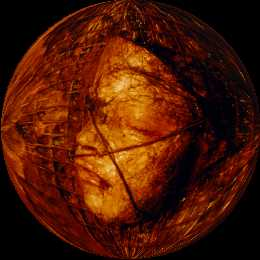

|
Main Help About the Site |
|

Chandra Garsson is one of my favorite artists in the Bay Area. I first heard of Chandra when a gallery announced an exhibit of her work. The painting on the postcard was dark, grainy, and had a twisted sense of aesthetics. What more can I say? It was love at first sight. Later, I found that she was participating in the ProArts Open Studios, so I decided to make the long trek to see her artwork before the exhibit. When I stepped into Chandra's studio, my breath literally caught. Her studio walls were covered with gorgeous artwork which I feel unworthy and unable to describe in words. I was strangely disappointed with the gallery exhibit afterwards. In her studio, the layout of so many pieces in a small area created an intense, overwhelming effect that was missing in the gallery. I also like the cluttered, personal look where the backdrop is composed of other pieces and workspace rather than plain wall. That thought was the impetus for this website. This site is nothing more than a tribute to the beauty of Chandra's studio: no resume, no interview, no titles. If you want more information about her, visit her other website. [Update]: Here's a video Chandra created, about her art giveaway: If you need more info, feel free to email Chandra. -aki, the distracted web person Hit your back button to return, or go back around to the front. [ Main | Help | About the Site ] |